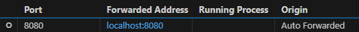

FuzzBench Building
FuzzBench 是 Google 的模糊测试评估基准, 本文为 FuzzBench 在 Ubuntu 系统上构建的流程记录.
- github 链接: https://github.com/google/fuzzbench
- 官方文档: https://google.github.io/fuzzbench/
下载 & 安装
FuzzBench 需要下载很多 Docker 镜像, 因此最好有 400GB+ 的硬盘空间
# sudo apt-get install build-essential rsync
git clone https://github.com/google/fuzzbench
cd fuzzbench
# conda create -n fuzzbench python=3.10
# conda activate fuzzbench
# or install python3.10 anyway
make install-dependencies
# check if install successfully
make presubmit
# if output "Success." means installing successfully
安装 docker, 已有则跳过
sudo apt update
sudo apt upgrade -y
sudo apt install -y ca-certificates curl gnupg lsb-release
sudo mkdir -p /etc/apt/keyrings
curl -fsSL https://download.docker.com/linux/ubuntu/gpg | sudo gpg --dearmor -o /etc/apt/keyrings/docker.gpg
echo \
"deb [arch=$(dpkg --print-architecture) signed-by=/etc/apt/keyrings/docker.gpg] https://download.docker.com/linux/ubuntu \
$(lsb_release -cs) stable" | sudo tee /etc/apt/sources.list.d/docker.list > /dev/null
sudo apt update
sudo apt install -y docker-ce docker-ce-cli containerd.io docker-buildx-plugin docker-compose-plugin
# test docker command
sudo docker --version
sudo systemctl status docker
# add docker group
sudo groupadd docker
sudo usermod -aG docker $USER
# hello world test
docker run hello-world
# set startup default
sudo systemctl enable docker
运行实验
在 fuzzbench 目录下创建实验配置文件 exper_config.yaml, 根据需要修改参数
trials：实验次数max_total_time：实验时间, 单位为秒docker_registry：使用的 dokcer 仓库experiment_filestore：实验数据存放的位置report_filestore：实验报告存放的位置local_experiment：是否本地运行实验
# The number of trials of a fuzzer-benchmark pair.
trials: 5
# The amount of time in seconds that each trial is run for.
# 1 day = 24 * 60 * 60 = 86400
max_total_time: 86400
# The location of the docker registry.
# FIXME: Support custom docker registry.
# See https://github.com/google/fuzzbench/issues/777
docker_registry: gcr.io/fuzzbench
# The local experiment folder that will store most of the experiment data.
# Please use an absolute path.
experiment_filestore: /path/to/experiment-data
# The local report folder where HTML reports and summary data will be stored.
# Please use an absolute path.
report_filestore: /path/to/report-data
# Flag that indicates this is a local experiment.
local_experiment: true
运行命令
source .venv/bin/activate
# pip install -r requirements.txt
export EXPERIMENT_NAME=fbrun
PYTHONPATH=. python3 experiment/run_experiment.py \
--experiment-config exper_config.yaml \
--benchmarks jsoncpp_jsoncpp_fuzzer mbedtls_fuzz_dtlsclient stb_stbi_read_fuzzer libxslt_xpath re2_fuzzer zlib_zlib_uncompress_fuzzer \
--experiment-name $EXPERIMENT_NAME \
--fuzzers aflplusplus aflfast ecofuzz mopt fairfuzz
Fuzzers 和 Benchmarks 列表
| Fuzzers | Benchmarks |
|---|---|
| Common Fuzzers | Common Benchmarks |
| afl, aflplusplus, aflfast, honggfuzz, libfuzzer, symcc_afl, symcc_aflplusplus, tortoisefuzz | bloaty_fuzz_target, harfbuzz_hb-shape-fuzzer, libpng_libpng_read_fuzzer, mbedtls_fuzz_dtlsclient, stb_stbi_read_fuzzer |
| Advanced Variants | Project-specific Benchmarks |
| afl_qemu, afl_2_52_b, aflplusplus_qemu, aflplusplus_um_random, aflplusplus_um_prioritize, honggfuzz_qemu, aflplusplus_frida, hastefuzz, ecofuzz | jsoncpp_jsoncpp_fuzzer, libxml2_xml, libxslt_xpath, php_php-fuzz-parser, proj4_proj_crs_to_crs_fuzzer |
| Fuzzers with Coverage or Symbolic Execution | Other Benchmarks |
| gramatron, klee, eclipser, wingfuzz, centipede, fuzzolic_aflplusplus_fuzzy, fuzzolic_aflplusplus_z3, lafintel, symsan | re2_fuzzer, woff2_convert_woff2ttf_fuzzer, freetype2_ftfuzzer, openssl_x509, sqlite3_ossfuzz, zlib_zlib_uncompress_fuzzer |
| Experimental and Optimization-focused Fuzzers | |
| aflplusplus_um_random_75, aflpp_random_default, aflpp_random_no_favs, learnperffuzz, manul, mopt, pythia_bb, pythia_effect_bb, token_level, weizz_qemu |
查看实验报告, 浏览器打开下面的 html 文件
/path/to/report-data/$EXPERIMENT_NAME/index.html
如果是在远程服务器上, 则通过端口转发来访问实验报告页面
# local run the command
ssh -L8080:localhost:8080 username@ip_addr -p server_connecting_port
# or in vscode add port transporting 8080 to localhost:8080
# then cd to report-data directory run python built-in http server
python -m http.server 8080

报错解决
docker pull 网络失败:
使用 docker 代理, 在
experiment/run_experiment.py文件下的command增加[ '--network=host', '-e', 'HTTP_PROXY=http://127.0.0.1:http_proxy_port', '-e', 'HTTPS_PROXY=http://127.0.0.1:http_proxy_port', '-e', 'ALL_PROXY=socks5://127.0.0.1:socks5_proxy_port', ]并
git commit. 这里需要在 host 环境下配置代理, http(s) 和 socks5 协议的代理端口分别为http_proxy_port和socks5_proxy_port.或者使用 transparent proxy
或者下载好所有需要的 images 之后再打包导入到实验服务器上 (这个方法依然需要保证运行时 docker 内环境有网络代理, 每次运行实验都需要访问 google 的资源, 所以还是需要按第一 / 二种解决方案)
第四种方案: 使用国内镜像源
docker_registry: gcr.m.daocloud.io/fuzzbench
test_plotting.py::test_pariwise_unique_coverage_heatmap_plot Fatal Python error: Aborted: 使用无头后端Agg
export MPLBACKEND=Agg
make presubmit
注意事项:
- 所有参数的路径都必须不包含大写字母
- 每次重新运行实验时, 保存结果的路径不要和之前的重复, 或者确保设置路径的文件夹为空
References
[1] https://google.github.io/fuzzbench/
[2] https://blog.csdn.net/u013648063/article/details/129348016